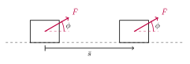
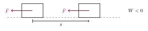
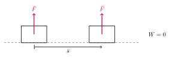

6. Orka
Öll eðlisfræðileg kerfi hafa að geyma orku af einhverju tagi, en hún segir til um hve mikla vinnu þarf til þess að breyta ástandi kerfisins.
Varðveisla orku er eitt af mikilvægustu lögmálum eðlisfræðinnar.
Orku er ekki hægt að búa til eða eyða. Hún getur hvorki birst upp úr þurru, né horfið sporlaust. Orka varðveitist í öllum ferlum en getur breytt um form. Birtingarmyndum orku má skipta í tvo meginflokka, mættisorku og hreyfiorku.
Mættisorka (e. potential energy) er geymd á einhvern máta:
þyngdarstöðuorka (t.d. vegna þyngdarsviði jarðar)
gormstöðuorka eða spennuorka (t.d. í teygðum og þjöppuðum gormum)
efnaorka (í efnatengjum sameinda)
kjarnorka (í kjörnum atóma)
Hreyfiorka (e. kinetic energy) er þar sem hlutir eða eindir eru á hreyfingu:
varmarorka (titrandi atóm)
hljóð (titrandi efni)
rafsegulorka (ljós)
raforka (rafeindir á hreyfingu)
Dæmi
Orka breytir um form.
Bolti sem fellur til jarðar hefur stöðuorku vegna þyngdarsviðs jarðar, en hún breytist í hreyfiorku á meðan fallinu stendur. Þegar boltinn lendir á jörðinni þá breytist hreyfiorka boltans sem hreyfiorka loftsins í kringum hann í formi hljóðbylgja og mögulega varma auk þess sem jörðin tekur á sig högg. Eftir því sem boltinn er hærra yfir yfirborðinu, því meiri stöðuorku hefur hann í upphafi og þar af leiðandi meiri hreyfiorku þegar niður er komið.
Þegar sprengja springur losnar mikil hreyfiorka, varmaorka og rafsegulorka (ljós) á stuttum tíma, en öll sú orka var í sprengjunni fyrir, bundin í efnatengjum atóma sem efnaorka.
Athugasemd
Orka er skalarstærð, ekki vigur. Lokað eðlisfræðilegt kerfi býr yfir fastri orku, sem getur breytt um form en getur aldrei horfið eða aukist, en orkan bendir ekki í neina sérstaka átt.
Hér munum við einbeita okkur að
6.1. Vinna
Kraftur \(F\) er sagður vinna vinnu (e. work) þegar hann flytur hlut um vegalengd (e. displacement) \(s\) . Vinna er oft táknuð með \(W\) og er margfeldi kraftsins og færslunnar:
Einingin fyrir vinnu er Joule, táknað \(J\).
Dæmi
Vinna togkrafts \(T=25 \text{ N}\) við að flytja hlut vegalengdina \(s=10 \text{ m}\) er
Ef vinna er ekki samsíða færslunni þurfum við að skoða vigrana sem krafturinn og færslan eru. Vinna er þá innfeldi kraftavigursins og færsluvigursins:
þar sem \(\phi\) er hornið á milli vigranna.
{kind=link}

Athugasemd
Vinna getur verið jákvæð, neikvæð eða núll.
Þegar krafturinn er í sömu stefnu og færslan, þ.e. ef hann er að vinna með hreyfingunni, er vinnan jákvæð. Ef \(-90°<\phi<90°\) þá er \(\cos(\phi)>0\) .
{kind=link}
Ef krafturinn er gagnstefna færslunni, þ.e. að vinna gegn hreyfingunni, þá er vinnan neikvæð. Ef \(90°<\phi< 270°\) þá er \(\cos(\phi)<0\).
{kind=link}

Ef krafturinn er hornréttur á færsluna þá er vinna kraftsins á hlutinn núll. Ef \(\phi=90°\) eða \(\phi=270°\) þá er \(\cos(\phi)=0\).
{kind=link}

6.2. Afl
Afl er breyting á vinnu á tímabili, eða tímaafleiða vinnu:
Einingin fyrir afl er Watt, táknað W.
Athugasemd
Passið ykkur á því að ruglast ekki á einingunni Watt fyrir afl og tákninu \(W\) sem er oft er notað fyrir orku! Það er yfirleitt skýrt af samhenginu hvort er um að ræða.
6.3. Hreyfiorka
Hlutur sem hefur massann \(m\) og fer á hraðanum \(v\) hefur hreyfiorku (e. kinetic energy) \(K\) :
Athugasemd
Þó hraði sé vigur (sem hefur bæði stærð og stefnu) þá er hreyfiorka massans skalarstærð. Hreyfiorkan er bara háð stærð hraðans, \(v=|\overline{v}|\) en ekki stefnu hans.
Hreyfiorka og vinna tengjast með þeim hætti að vinna krafts er jöfn breytingunni sem verður á hreyfiorkunni samkvæmt vinnu-hreyfiorkusetningunni:
Þegar vinnan er jákvæð þá er hreyfiorkan að aukast.
Þegar vinnan er neikvæð þá er hreyfiorkan að minnka.
Þegar vinnan er núll þá er hreyfiorkan ekki að breytast.
Hreyfiorka segir til um vinnuna sem þarf til þess að að koma massa \(m\) úr kyrrstöðu í hraðann \(v\).
Dæmi
Sleði með massann \(m=20\) kg rennur eftir sléttum, láréttum snjó. Þar er lítill núningur, en samt nóg til þess að hægja á sleðanum. Hver er vinna núningsins ef upphafshraði sleðans er \(v_1 =10\) m/s og lokahraðinn er \(v_2=5\) m/s?
Lausn
Við vitum að vinnan \(W\) er jöfn breytingunni á hreyfiorkunni. Hreyfiorkan í upphafi er
Hreyfiorkan í lokin er
Því er vinnan
Vinnan er neikvæð því krafturinn vinnur gegn hreyfingunni og hreyfiorkan er að minnka.
6.4. Stöðuorka
Hér ætlum við að fjalla um þær tegundir stöðuorku sem koma oftast fyrir í klassískri eðlisfræði, þyngarstöðuorku og gormstöðuorku. Hinar tegundirnar, efnaorka og kjarnorka eru engu að síður mikilvægar og áhugaverðar.
6.4.1. Þyngdarstöðuorka
Þegar hlutir eru í þyngdarsviði, þ.e. nálægt yfirborði miklu stærri hlutar (eins og jarðarinnar) hafa þeir þyngdarstöðuorku (e. gravitational potential energy) \(U_{grav}\) :
þar sem \(y\) er hæð massans yfir einhverjum tilteknum viðmiðunarpunkti, sem er oft yfirborð jarðarinnar.
6.4.2. Gormstöðuorka
Þegar orka er geymd í hlut sem getur afmyndast, eins og t.d. gormum og gúmmíteygjum, þá köllum við það gormstöðuorku (e. elastic potential energy). Fyrir gorm með gormstuðul \(k\) sem teygður er (eða þjappaður) um vegalengdina \(x\) þá er gormstöðuorkan \(U_{el}\):
6.5. Orkuvarðveisla
Orka er einn eðliseiginleika kerfis sem er varðveittur, þ.e. hún getur aldrei birst upp úr þurru né horfið sporlaust.
Hún getur aðeins breytt um form, t.d. þá getur stöðuorka orðið að hreyfiorku og öfugt. Þegar hlutur fellur til jarðar úr einhverri hæð minnkar stöðuorka hans, en á móti kemur að hann fer hraðar, þ.e. hreyfiorka hlutarins eykst.
Séu allir kraftarnir í kerfinu geymnir, þ.e. ef það er enginn núningur eða annað viðnám, þá er öll orka kerfisins annað hvort stöðuorka eða hreyfiorka og þá gildir að:
Þar sem \(U\) táknar alla stöðuorku sem kerfið gæti búið yfir, bæði gorm- og þyngdarstöðuorku, og \(K\) táknar hreyfiorku þess. Lágvísirinn, eins og oft áður, segir til um hvenær við erum að skoða orku kerfisins. \(_1\) táknar þá fyrir einhvern atburð, við tímann \(t_1\) og \(_2\) táknar eftir einhvern atburð, við tímann \(t_2\).
Dæmi
\(0.5\text{ kg}\) steinn fellur úr kyrrstöðu í 20 metra hæð til jarðar. Hver er hraði hans rétt áður en hann skellur á yfirborði jarðarinnar?
Lausn
Gerum ráð fyrir að loftmótsstaðan hafi engin áhrif, þ.e. að núningurinn á milli steinsins og loftsins sé ekki að vinna neina vinnu.
Í upphafi er hreyfiorka steinsins núll (\(K_1=0\)), fyrst hann fellur úr kyrrstöðu, en þyngdarstöðuorka hans er:
Rétt áður en steinninn skellur á yfirborði jarðarinnar í \(0\) metra hæð er stöðuorkan orðin að núlli (\(U_{grav,2}=0\)), en steinninn er á fleygiferð. Öll stöðuorka steinsins í upphafi er nú orðin að hreyfiorku. Því er:
{kind=link}
6.5.1. Vinnu-hreyfiorkusetningin
Ef einhver kraftanna í kerfinu er ógeyminn, t.d. ef það er núningur eða annað viðnám, þá er orkan ekki varðveitt. Þá verður orkutap í kerfinu sem nemur vinnu ógeymna kraftsins, líkt og í vinnu-hreyfiorkusetningunni.
Dæmi
Þegar krakki hoppar á trampólíni kemur margskonar orka fyrir. Þegar krakkinn er í loftinu býr hann yfir þyngdarstöðuorku, sem breytist í hreyfiorku þegar hann fellur í átt að trampólíninu. Þegar hann lendir á dúknum tognar á honum og kerfið býr yfir gormstöðuorku, sem aftur breytist í hreyfiorku þegar krakkinn skýst aftur upp í loft.
Núningur í trampólíninu og loftmótstaða veldur því að þessar þrjár orkutegundir eru ekki alveg varðveittar, heldur vinnur núningurinn vinnu. Samkvæmt vinnu-hreyfiorkusetningunni mun hreyfiorka krakkans minnka, þ.e. hraði hans á leiðinni upp í loftið mun minnka og þar af leiðandi mun hann ekki komast jafn hátt (þyngdarstöðuorkan verður ekki jafn mikil og í fyrra hoppi). Að lokum mun krakkinn hætta að skoppa, nema hann láti fæturna vinna vinnu sem vegur á móti vinnu núningsins.